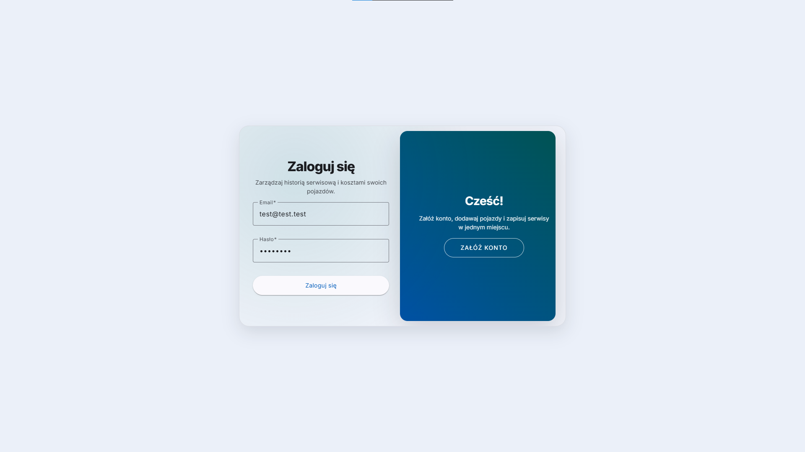
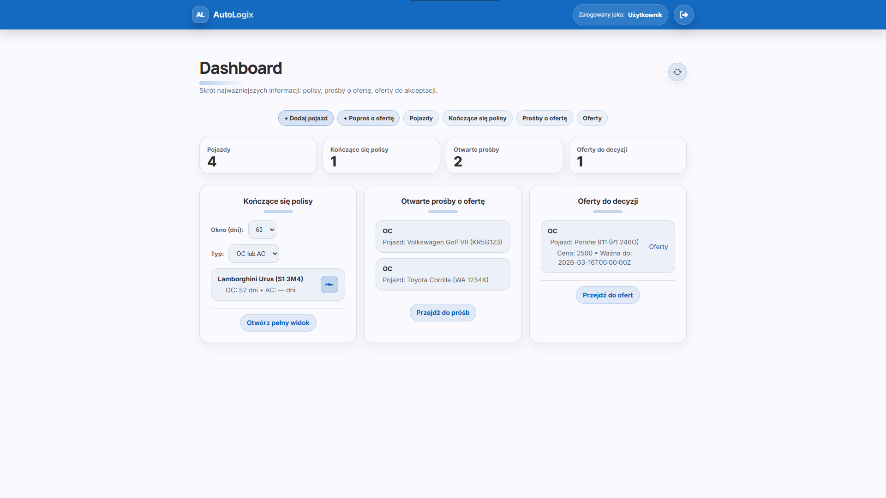
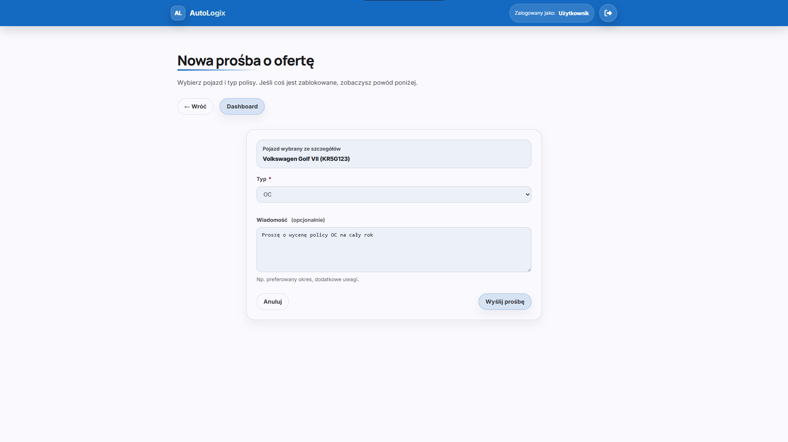
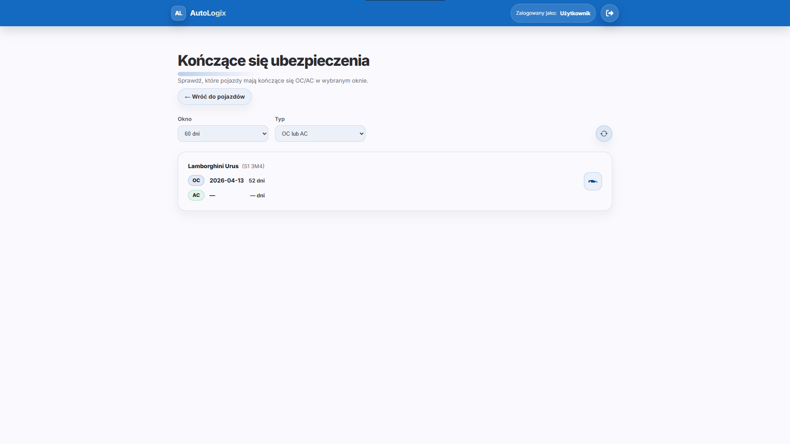
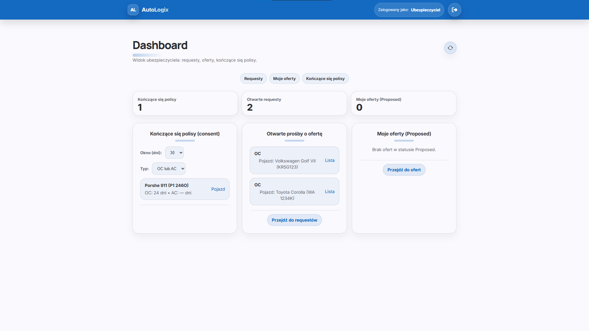
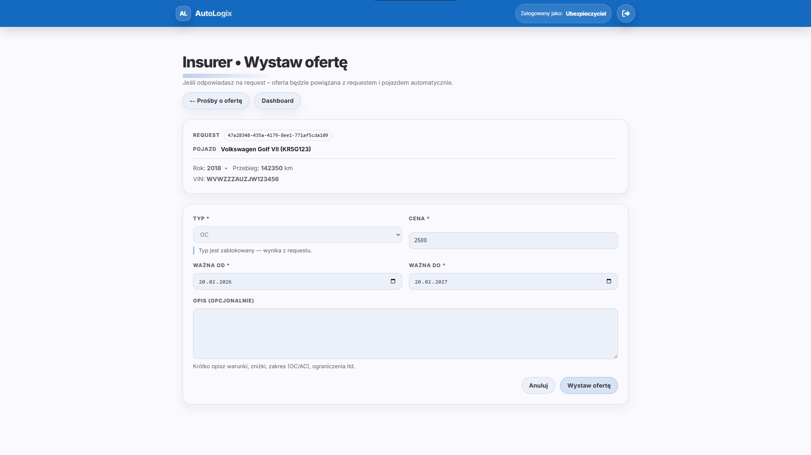
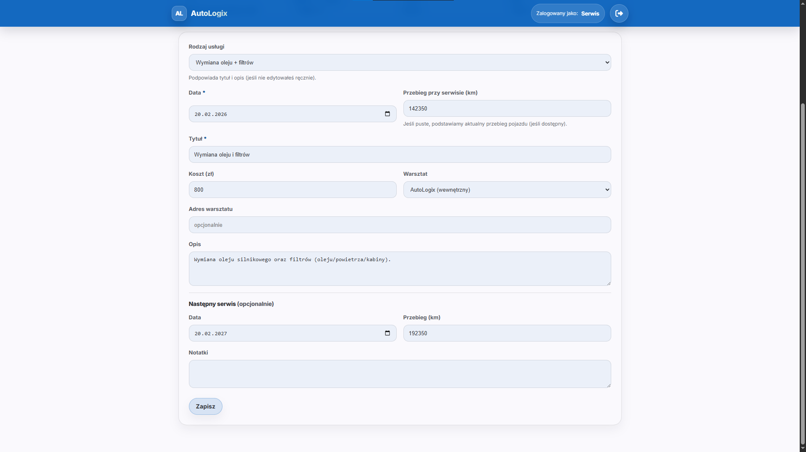
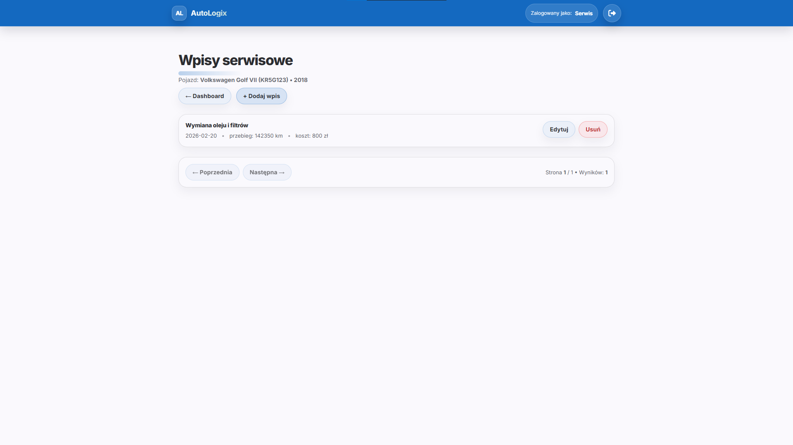

AutoLogix
AutoLogix is a vehicle management system: car profile, service history and insurance-related workflows in one place. The app is multi-role: the owner, service technician and insurer each have different views and permissions.
The backend is ASP.NET Core Web API built with DDD, using JWT and ownership-based access control (a user operates only on their own vehicles and entries).
- Angular
- .NET
- ASP.NET Core Web API
- EF Core
- PostgreSQL
- JWT + role-based authorization
- DDD (Domain / Application / Infrastructure / Api)
What the app can do
AutoLogix combines technical vehicle data, repair and inspection history, and insurance logic into a consistent “vehicle profile”. The system was designed with real business scenarios in mind — clear role separation, permission control and a predictable API.
- User registration and login (JWT Bearer).
- Vehicle CRUD: list, details, create, edit and delete.
- Service history within the vehicle context (nested routing, pagination).
- OC/AC policy expiry alerts and action availability windows.
- Insurance workflow: request an offer → insurer offer → accept/reject.
- Role-based UI: views and actions based on role (User / Service / Insurer / Admin).
Architecture & security
The backend was designed using DDD with clear separation of
responsibilities between layers. Controllers return
DTOs mapped manually, and the security logic is
based on the JWT user context (claim userId) and the
“ownership” rule.
-
JWT Bearer – every private endpoint requires
the header
Authorization: Bearer <token>. - Data ownership – a user can view/modify only their own vehicles, and service entries are accessible only via the user’s vehicles.
- Nested routing for service history
- Pagination on lists (vehicles and services) + consistent HTTP status codes.
- Production configuration via environment variables (JWT secrets, connection string), prepared for deployment.
What makes AutoLogix stand out
- DDD architecture with clear layer separation
- Multi-role access logic (User / Service / Insurer / Admin)
- Ownership validation (vehicle → user)
- REST API with pagination and nested routing
- Consistent response contract and stable HTTP status codes
The project was designed as a consistent business system with a focus on access control, API predictability and future growth without breaking the domain structure.
Take a look inside the app
Login screen


















Online demo
Test accounts: you can sign in with the demo accounts or create your own user account. Registration applies only to the User role.
insurer@autologix.dev
Dev123!@#
service@autologix.dev
Dev123!@#
test@test.test
zaq1@WSX
Note: the API runs on a free hosting plan, so after a longer period of inactivity it may “sleep” and the first response can take longer. The database is PostgreSQL on Neon (also free tier), so occasionally the first request after a break may have higher latency.
If you want to “wake up” the API faster, you can open the health endpoint: /health?db=true